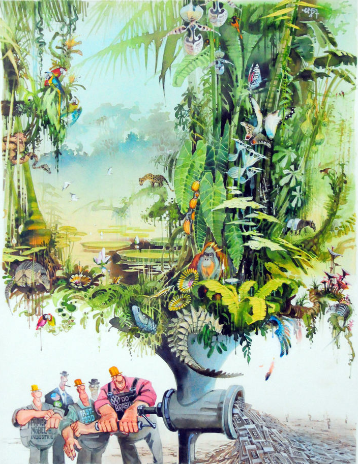
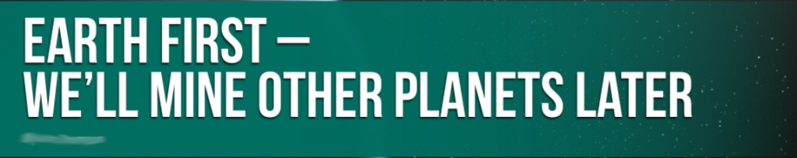
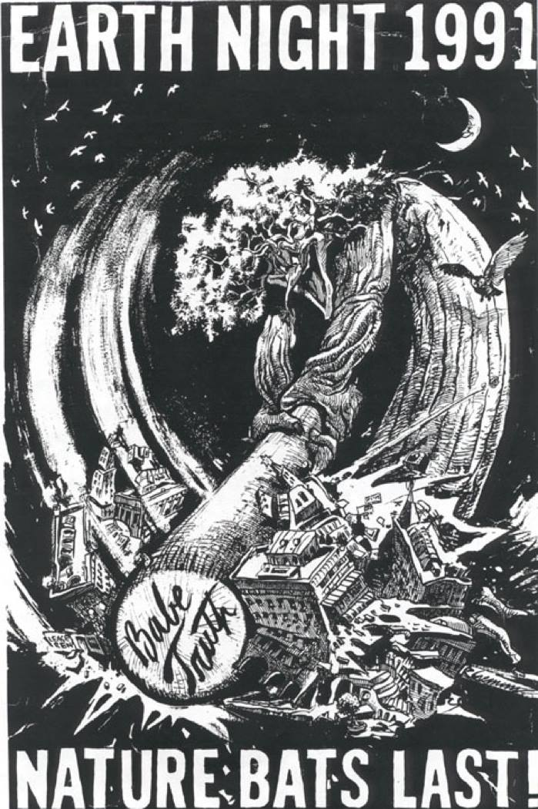

Find Your Tribe

"Only after the last tree has been cut down;
Only after the last fish has been caught;
Only after the last river has been poisoned;
Only then will you realize
that money cannot be eaten."
-- Cree Prophecy
A lot of us are looking around these days and asking ourselves, “What the fuck is happening?!?”
Many of us, have seen this coming for a long time. The modern human social order is unsustainable, and is dying. What we are witnessing is a series of death blows to our planet. COVID-19 is laying bare this truth. Deny this, and we will surely perish.
It really doesn’t get any scary than this. This is that doomsday movie where the planet crushing asteroid is upon us, only we did this to ourselves. As a society we have ignored the warnings and time is up. Those of us who truly grasp the enormity of our situation have little to no hope that we will be able to get it together in time. In fact, many experts believe we have already passed the point of no return, and our fate is sealed.
Unless you belong to one of the few remaining tribes, who truly live in balance with the natural world, you are part of the problem. I am part of the problem. It is time for us to be part of the solution.
What might a solution look like? What can we learn from those who have lived in a viable society?
One characteristic of all the viable societies I can think of is that they are nonhierarchical or egalitarian societies. And not just equal in the sense of human to human. Some cultures describe all of creation as equal. The two legged, four legged, winged, finned, plant people, rock people, they are all people. They all have an intrinsic, equal, right to exist.
Compare that to our hierarchal society. Our society is based on violence. We are not capable of getting the free cooperation of others, because we aren’t cooperating, we are taking. We inflict violence upon the Rock people when we blow them up to take our precious metals. We inflict violence upon the Forest when we mow her Tree people down, just to turn them into ass wipe. We inflict violence upon all the Peoples of the Seas when we drag our nets across her floor in a maniacal genocidal indifference. We inflict carnage upon all manner of people to fill our stores with “food”. We inflict violence upon our fellow human beings through all manners of slavery and oppression.
In our society, those at the top, take from those beneath them and shit rolls downhill. Being at the bottom really stinks. Which sets up a hunger games to claw your way up out of the shit. Stepping on the backs of people on your way up. Is this the world you want? I know it is not the world I want. But it is the world we have now.
When you see people as being equal, you can’t really justify slavery, putting kids in cages, genocide, or the wholesale slaughter of our home. In order to justify violence, you have to see yourself as better than those you are taking from. Somehow more deserving than they.
Tyrants are very well aware of this. That is why dictators need an other for their people to take from. Someone needs to be knee deep in the shit, to prop up the rest of the hierarchy. In the U.S. you can see this in the degradation of people of color, women, immigrants, scientists, pagans, libtards, kids in cages… What?! Yes, we in the U.S. are allowing our government keep kids in cages. I too am guilty of letting our government do all of these violent things and more. I am not happy about it, and I am trying my best now to change the way we organize our societies. Hopefully, we can at the very least, push violence back into hiding, if not end it all together. That such horrors exist in the light of day is an indication of how dark our times are.
Most U.S. Citizens, at least as individuals, have little influence in how our government operates day to day. Our Constitution is a thing of beauty and wonder, but it has a fatal flaw. The Constitution is an attempt to bring more equality to hierarchy, but hierarchy is the antithesis of equality. As a nation we could have evolved our Constitution into something even more beautiful, but we didn’t.
No, instead we embraced ideas like Capitalism. Capitalism is very, very good at what it does. Capitalism is at its base, the conversion of natural wealth into artificial wealth. The natural world is the base of capitalism’s hierarchy. The shit pile at the bottom. We churn that natural wealth into artificial wealth. Trees, rocks, birds, bees churned into nesting yachts for those at the top. What is worse, it is a Ponzi scheme. The economy must grow without bounds. Contraction is the death of the economy. But how can it be possible to create an infinite amount of artificial wealth when natural wealth is finite? It isn’t possible. Our society is not and has never been sustainable.
So, those at the top know this, why do you think they are trying to get off of this planet? I live in a “dying” mining town. Of course it is dying, by a capitalist definition, we mined it out. It never was sustainable. Yet, the mentality remains. I see a bumper sticker from time to time around town that really demonstrates the meme.

What does that kind of mindset say to you?
What it says to me is that we need to find another way. Sadly, the time to do that has probably already past. Certainly the time to head off massive carnage has past. Just look around at the world, it is painfully obvious to many of us. Very painfully obvious. Once you see, the grief is overwhelming. This isn’t just the grief of the loss of a loved one, this is the grief of the loss of everything that was and could have been. As one friend recently said in reply to those who are still pushing their unrealistic dreams and wishes on others;
I cried when I realized I could no longer avoid the fact that the living Earth was dying. I didn't cry because humanity would be gone. I cried because there would be no more trees!
That was a long time ago, and the evidence I've seen since then has steadily reaffirmed that somber view of the future. We aren't "graduating"--pleasant as it would be to think so, especially with all the horrors going on right now. We are NOT like cocooning caterpillars, on the verge of transitioning into beautiful butterflies.
Alas--we are going extinct.
And [REDACTED]--this dusty little corner of the internet--is where we find friends who also recognize this fact and don't try to talk us out of it with falsely cheerful words.
Well, maybe it is a graduation after all. We've left childish optimism behind and taken a cold, hard look at our situation. You might say that we've "graduated" into adulthood. We invite you to do the same.

My town is pretty small. We have somewhere between three and four thousand people. I’ve developed what I call the “familiar stranger” effect. I see someone, and I might not know who they are, but I see them around a lot. They are familiar strangers to me.
We were more than a month into our State’s stay at home order when we needed to resupply at one of the two grocery stores in town. As I struggled with my face mask and my fogging glasses, walking with my wife to the door, there were people, elderly people, with no masks, just yucking it up and blocking the door. I couldn’t believe it. I lost my cool and threw my arms out and bellowed from behind my mask, “I am 6 feet tall. Which means my arm span is 6 feet!”
I threw my arms wide and the shocked people blocking the door immediately parted to allow me through, outstretched arms and all. But just enough that I could get through, which is the minimum distance they should have been apart in the first place. And this, was just the beginning.
I was shocked when we got inside. Obviously the town was not taking this seriously. The store owners and workers were all doing the right thing. They had their masks on. They had put up plexiglass for the cashiers, hand sanitizer, they had really done the best they could for the community they serve. And here were around a 5th of the people with no social distancing whatsoever. One woman walked right up to my wife without a mask on, and started talking.
My wife looked at her and sternly said, “Why are you talking to me.”
We turned to the owners and asked, “Can’t you stop them from coming in without a mask?” It was asked out of frustration, we know damn well there isn’t much to be done around here if someone doesn’t play nicely with others. Although, people have been run out of this town for spurious reasons in the past.
A few weeks later we needed to resupply on some fresh items again. We now knew that the first case in town had been confirmed the day before our last trip to the grocery. To make matters worse, the person infected worked at the only drive-thru operating in town since the Governor’s order. Anyone who has lived here for more than a few winters knows that meant the whole town was probably infected.
We have also been learning more and more about this virus and it just keeps getting worse. I have heard experts describe it as, “one of the most perplexing viruses science has seen.” And it is. I do not want to catch this, and I most certainly do not want to see those I love and care about harmed by it.
There isn’t a lot I can do about what other people choose to do. So, this time, we decided I would go alone to minimize risk. We are better at protecting ourselves now, we have to be.
As I pulled into the parking lot, I took a deep breath, it looked busy. Worse than that, I’ve heard folks saying that this looked like a normal fishing opener. Which means that people are probably not following the “recreate close to home” mandate either.
Once I was in the store, I looked around, and at first didn't see anyone not wearing a mask. Oh, good, my town is finally taking this seriously.
But then, yeah, she didn't have mask on... who is that? Doesn't seem familiar. Probably a tourist.
Wait, there's another, oh yeah that dude... oh and that guy, oh yeah, his daughter killed herself on Father's Day... Oh, and that guy, well he's a schizophrenic...
OK, that's right, don't judge the person, just the behavior.
I had been reflecting on my reaction during the last trip we had made, and had regretted losing my cool. Now is the time to be as patient and understanding as we are able. This trip I managed to maintain and get in and out without incident.
A few weeks later we needed to make another grocery run. Then we realized it was Memorial Day weekend. Fishing opener might be our official season opening, but Memorial Day weekend is when it gets real. But we needed food, so we decided to go first thing Friday morning when it is usually quieter in the stores.
I was trying to make a right turn onto the main drag. I waited as boat after boat passed. Great, they aren’t locals either. But as we pulled into the parking lot of the grocery store, it looked like going early was the right call. Once inside, it was almost all townies, and they were all wearing masks. The one guy I saw without a mask wouldn’t make eye contact with me. Which was probably for the best as I had decided that some social shaming was going to be on the menu today.
We managed to get through our shopping without incident. We even had two carts full of groceries this time. This is good, no issues, I’m maintaining my cool, and we are unloading a ton of groceries. So many groceries that they had two baggers working on our food. We were chatting it up with folks, checking in, seeing how everyone is doing, when this lady walks up behind us with an armload of groceries and no mask!
By this time, I had finished unloading all of our groceries and was waiting for everything to be rung up and bagged. I turned around and glared at this woman. She wasn’t familiar.
I looked at the emptying conveyor belt, and looked at her. Was she really going to try and put her groceries on the belt? I watched as she looked at the sign at the front of the belt, I knew what is said, basically “Please stay back at least 6 feet.” And then she made her move.
I put my hand up, with an open palm that said she should stay right where she is and calmly stated, “That’s far enough, you can stay right where you are.”
She looked at me, and then proceeded to walk towards the belt.
I yelled this time, “Stop! Stay where you are!”
She looked at me again, and proceeded to walk towards the belt. Now, I had to close the distance to block her, risking my health, and therefore my family’s health.
This time I yelled, “Back the FUCK UP!”
With palm outstretched I moved towards her, “BACK THE FUCK UP!!!”
Now, she looked at me aghast. As if she were offended. She said something and looked around at everyone, I guess hoping someone would come to her aid. It became clear to me that she wasn’t going to listen.
"You are so FUCKING SELFISH! Back the FUCK up! Get back right now you fucking selfish twat!"
I heard my wife say something that I didn't make out, and then say, "78 grocery store workers have already died from the COVID."
It appeared at this point the woman realized no one was going to come to her defense. She looked around, turned around and wandered off into the store.
I was trying to calm myself down, muttering to the cashier about how selfish that woman is when another cashier's voice could be heard in that oh so pragmatic Minnesota nice kind of way...
"I can help you over here."
Enough is enough, if you are just going to be a selfish twat, then that is how you will be treated. You are in the same category as people that shoot their guns in the air and drive drunk. Actually, it is worse than that. Your reckless indifference is threatening everyone I have ever known and care about.
Like a mother defending her young, if you threaten my loved ones, you are asking for trouble.

How can we support a society that is killing all life on Earth?
I don’t know about you, but I know that I can’t support that system. I have been trying to find a way out, I see now, my entire life. I never wanted in to begin with. So, what have I found?
There is no way out. There is nowhere to go, nowhere to run, nowhere to hide. The only choice is to accept responsibility for being a part of this mess, and then to try and do something about it.
For some, this means trying to destroy the current system. I think that cause is futile and unnecessary. The current system is collapsing just fine all by itself. I believe we would be better served by building something else. That we need to get to work creating a new way of living, one that is in tune with reality. What could that look like?
Well, for one thing, it won’t be my idea or any individuals. It will be something that like minded individuals build together. What will these “like minded” individuals look like?
Well, I don’t rightly know, but I’ll know it when I see it. I do know that we will share some values.
I know we will understand that we are all in this together. And by “we”, I mean all of us, the Web of Life. We will own that we are a part of the problem, and need to be a part of the solution. Unless of course, those individuals happen to be in the rarity that is in balance with the Earth. Then they aren’t part of the problem and if they chose to help, they would be an invaluable source of wisdom for the rest of us.
The foundational virtue is the understanding that all things are created equal and possess an intrinsic right to exist. I believe that this virtue is the first tile in the mosaic we will create together and this first tile will inform the rest of the pattern.
We will make decisions together through some manner of consensual democracy. Consensus building and consensus decision making takes a lot of work. Many of us have little to no experience making decisions in this way. It requires excellent communication, empathy, reason, compromise, lots of time, and a lot of work.
We have to be realistic, it is probably already too late, but we must be willing to fight the good fight on the way down, together.
What’s the alternative?
The time has come for each of us to decide who we are, and to find our tribe, so that together, we can build a future for all People.
"We are the ones we have been waiting for."
--Unknown Elder
"I've witnessed one miracle after another through my whole life, extraordinary things happening.
I see that God tries very hard and apparently is intent to make us a success if it is possible.
So if we don't make it, it is because of each individual.
You can't leave it to your politicians to represent you; you can't leave it to your ministers to pray for you.
It's going to be how each individual reacts in relation to the truth."
-- Buckminster Fuller, 1978